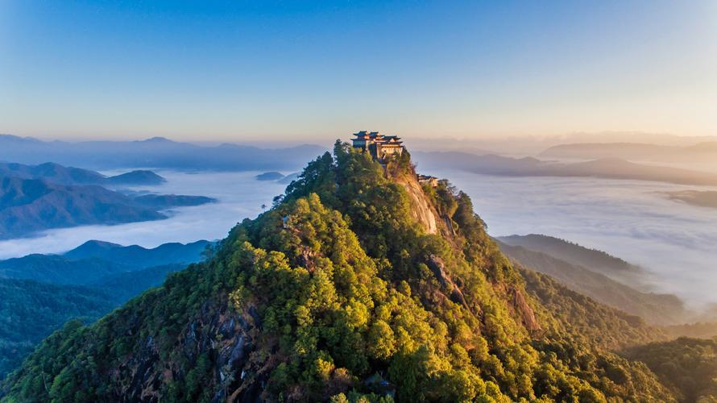
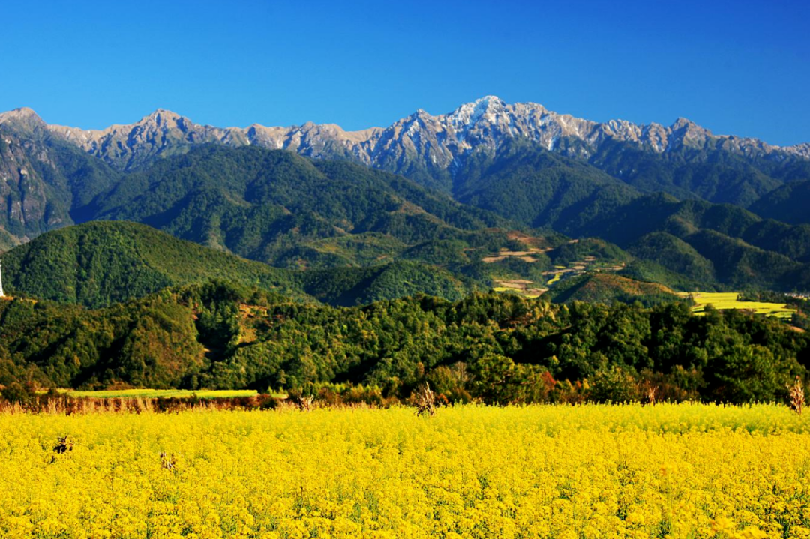
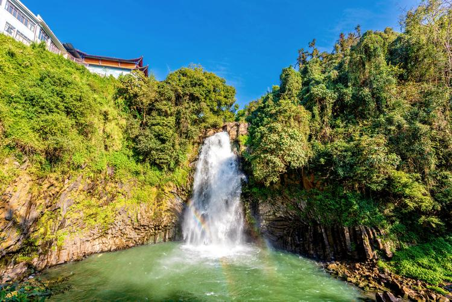

热海景区
热海景区是腾冲地热资源的集中展示区，为中国规模最大的地热温泉群。境内分布有高温沸泉、温泉、喷泉、气泉等多种地热形态，其中大滚锅水温高达96.6℃，昼夜翻滚不息，蔚为壮观。怀胎井、珍珠泉、蛤蟆嘴、鼓鸣泉等景观各具特色，游客可在此体验天然温泉煮鸡蛋、煮花生等特色项目。景区内设有温泉浴池，可尽情享受地热温泉的康养功效。
💡 建议游玩时长：3-4小时 | 门票参考：请以景区公示为准
探索腾冲的自然奇观与人文景观
腾冲最具代表性的旅游目的地
热海景区是腾冲地热资源的集中展示区，为中国规模最大的地热温泉群。境内分布有高温沸泉、温泉、喷泉、气泉等多种地热形态，其中大滚锅水温高达96.6℃，昼夜翻滚不息，蔚为壮观。怀胎井、珍珠泉、蛤蟆嘴、鼓鸣泉等景观各具特色，游客可在此体验天然温泉煮鸡蛋、煮花生等特色项目。景区内设有温泉浴池，可尽情享受地热温泉的康养功效。
💡 建议游玩时长：3-4小时 | 门票参考：请以景区公示为准

和顺古镇始建于明代，至今已有600余年历史，曾荣获"中国第一魅力名镇"称号。古镇依山傍水，小桥流水、稻田环绕，艾思奇故居、和顺图书馆、元龙阁、洗衣亭、弯楼子等明清建筑古朴典雅。和顺图书馆为中国最大的乡村图书馆，藏书万余册。侨乡文化、马帮文化在此传承至今，是体验滇西侨乡风情、休闲度假的理想之地。
💡 建议游玩时长：半天至一天

固东镇江东社区（银杏村）拥有三千多株古银杏树，树龄多在百年以上，最古老的可达500余年。每年11月中旬至12月初，金黄的银杏叶铺满村落巷道、农家院落，形成"村在林中、林在村中"的独特景致，被誉为"中国最美银杏村"。游客可漫步古村落，品尝农家菜，感受静谧的田园秋色。
💡 最佳观赏期：11月中下旬

云峰山为腾冲名山，海拔2445米，山巅道观始建于明代，是滇西著名道教圣地。可乘缆车上山，登顶后可俯瞰腾冲坝子及高黎贡山群峰。山中古树参天，云雾缭绕，素有"仙山"之称。
💡 建议游玩时长：3-4小时

高黎贡山国家级自然保护区横亘腾冲东部，生物多样性极为丰富，被誉为"世界物种基因库"。可开展徒步、观鸟、自然教育等生态旅游活动，需提前了解入园规定。
💡 建议提前预约，遵守保护区规定

北海湿地是云南省唯一的国家湿地保护区，为高原火山堰塞湖生态系统。春夏季节，湿地内鸢尾花、睡莲等水生植物盛开，各类水鸟栖息繁衍。游客可乘船游览湿地，或体验独特的草排划行——当地居民用火山灰淤积形成的草甸制成草排，是北海湿地特有的游玩方式。
💡 建议游玩时长：2-3小时
更多值得一游的腾冲景点

腾冲火山群是中国四大火山群之一，境内分布97座火山，形成壮观的火山地貌。公园内大空山、小空山、黑空山等火山锥保存完好，可登顶俯瞰火山口及周边田园风光。火山博物馆内展出火山岩石标本及地质科普知识。游客还可乘坐热气球俯瞰整个火山群，体验独特的空中观光项目。
💡 建议游玩时长：2-3小时

国殇墓园是为纪念中国远征军第二十集团军攻克腾冲阵亡将士而建，为全国重点文物保护单位、国家级抗战纪念设施。园内松柏苍翠，忠烈祠、烈士冢、纪念塔庄严肃穆，安葬着远征军阵亡将士骨灰。与滇西抗战纪念馆相邻，是开展爱国主义教育、铭记抗战历史的重要场所。免费参观，建议保持庄重肃穆。
💡 免费参观 | 建议时长：1-2小时

叠水河瀑布位于腾冲城区，为火山堰塞瀑布，高46米，为全国唯一的城市火山瀑布。瀑布从断崖飞泻而下，气势磅礴，周边建有龙光台等观景设施。
💡 建议游玩时长：1小时